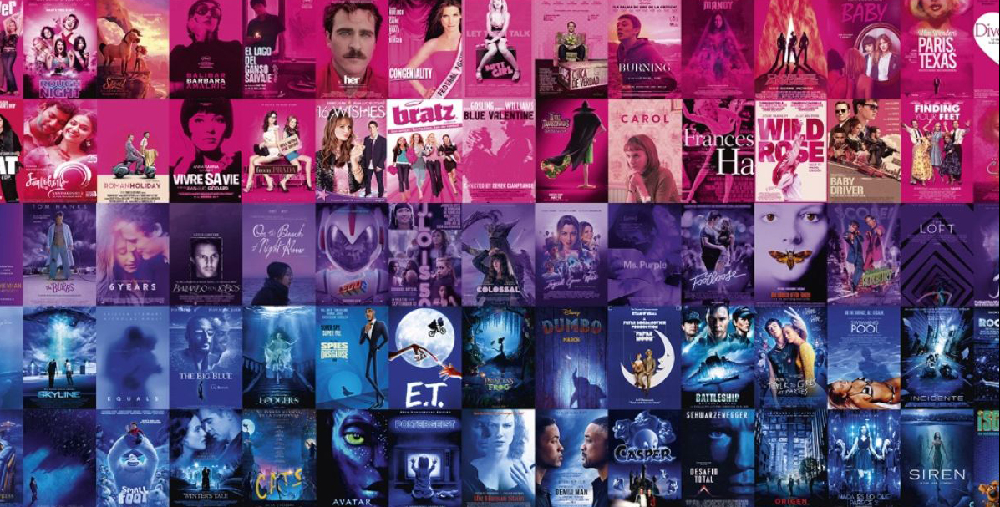
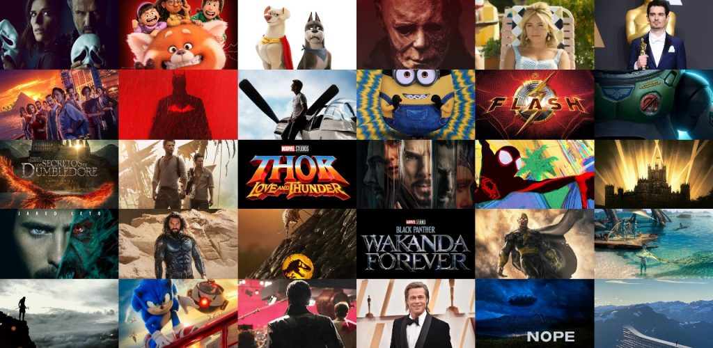
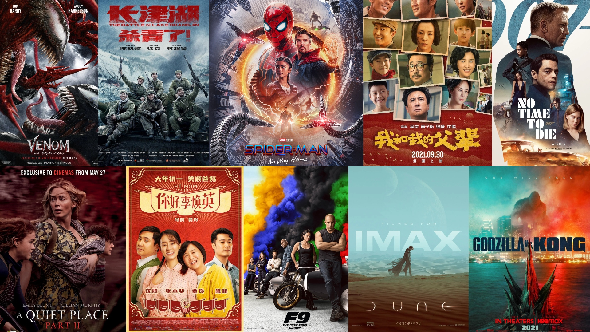
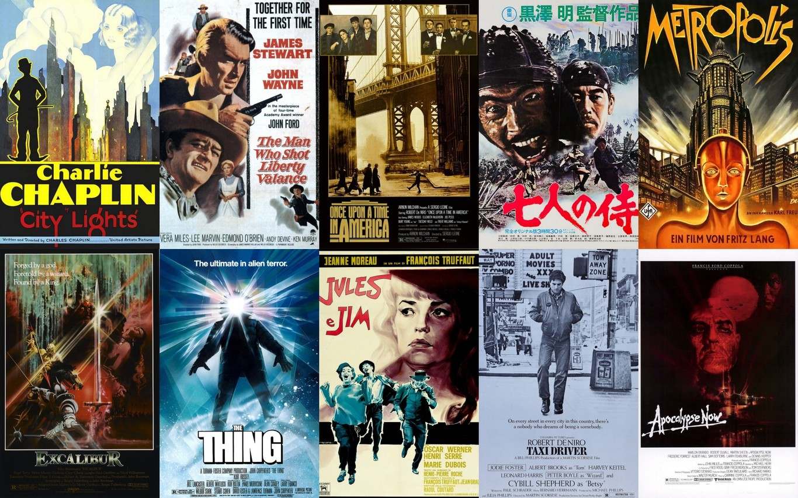
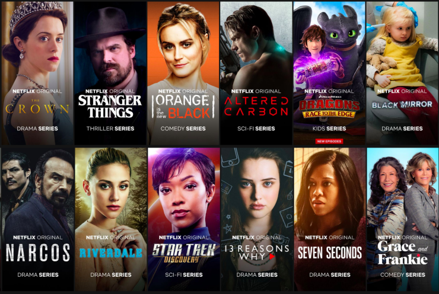

uwu web
Estrenos
Taquilleros
Clasicos
Series
CONOCE NUESTRO CATÁLOGO DE PELÍCULAS Y SERIES COMPLETAMENTE GRATIS

DISFRUTA DE LOS ÚLTIMOS ESTRENOS DESDE LA COMODIDAD DE TU CASA

CONOCE CUÁLES SON LAS PELÍCULAS MÁS TAQUILLERAS QUE TENEMOS PARA TI

NO TE PIERDAS DE LOS CLÁSICOS QUE FORJARON LA HISTORIA DEL CINE

MARATONEA ESTA TARDE CON LAS SERIES EXCLUSIVAS DE NUESTRA PÁGINA
